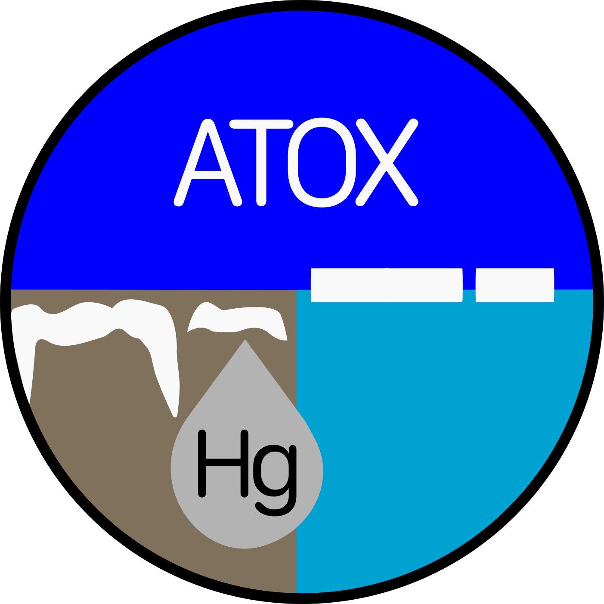
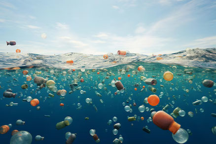
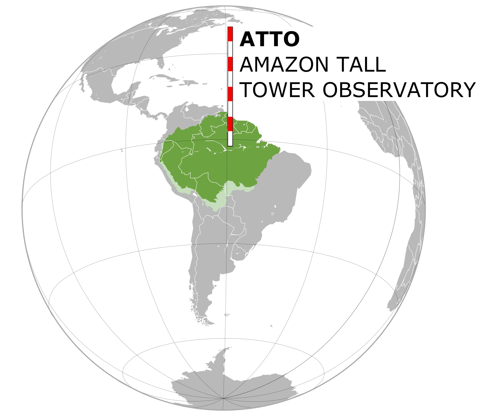
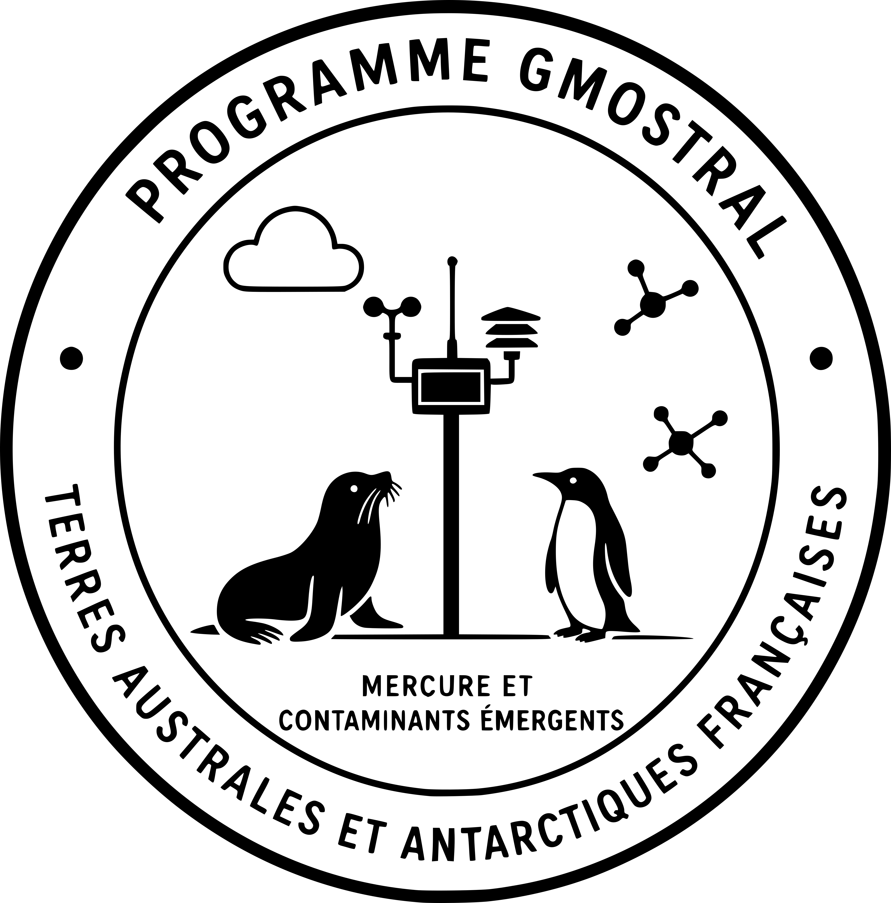

About Me
I am a CNRS Research Scientist at the Institute of Environmental Geosciences in Grenoble, France.
My research focuses on the impact of global changes on the cycle of contaminants such as mercury and microplastics. I lead research projects in remote regions of the world, including the Arctic, the French Alps, and the Southern Ocean, using both field observations and modeling tools. My goal is to understand and mitigate the environmental risks posed by these contaminants in vulnerable ecosystems.
I am also the co-director of the European Research Course on the Atmosphere (ERCA).

Research Projects
Is the new Arctic a source of toxic mercury?
Role: Principal Investigator
Duration: 2024–2028


Transfer through air bubble bursting of micro and nanoplastics from the ocean to the atmosphereRole: Atmospheric modeling Work Package co-lead
Duration: 2023–2027

Constraining the mercury sink potential of the Amazon rainforest through in situ micrometeorological measurements and numerical modelingRole: Principal Investigator
Duration: 2024–2026

A contribution to global mercury observations in French Austral LandsRole: Co Principal Investigator
Duration: 2023–2027
International export report
AMAP Assessment 2021: Mercury in the Arctic
Arctic Monitoring and Assessment Programme (AMAP), Tromsø, Norway, 2021
Technical Background Report for the Global Mercury Assessment 2018
Arctic Monitoring and Assessment Programme, Oslo, Norway/UN Environnement Programme, Chemicals and Health Branch, Geneva, Switzerland
Book chapters
Mercury in the Cryosphere./a>
In "Chemistry of the Cryosphere", P. B. Shepson and F. Dominet, editors, World Scientific Publishing, Singapore, 459-502, 2022
Peer-reviewed Publications
Atmospheric Mercury Deposition in Polar Regions
Journal: Environmental Science & Technology, 2023
DOI: 10.xxxx/xxxx
This study explores the seasonal variability of mercury deposition in the Arctic and its correlation with climate change indicators.